Swords & Blades Collection
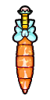
Carrot Dagger
Type: Event / Holy
Power: 42 Attack
Ability: Festive event weapon styled like a glowing golden carrot with a light-blue ribbon.
Bunny Crystal Sword
Type: Event / Magic
Power: 52 Attack
Ability: Sparkling pastel blade with bunny ear guards that radiates festive magical energy.

Iron Shortsword
Type: Sword
Power: 15 Attack
Ability: Standard trusty blade for early-game melee combat and swift slashing.
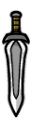
Steel Broadsword
Type: Heavy Sword
Power: 24 Attack
Ability: Wider blade designed to deliver heavier impact blows against armored foes.
Gilded Guard Sword
Type: Elite Sword
Power: 32 Attack
Ability: Balanced blade featuring a prominent golden hilt for enhanced critical strike chance.
Desert Sabre
Type: Sabre / Cutlass
Power: 28 Attack
Ability: Fast slicing curved blade with a gold-wrapped handle for rapid combo slashes.
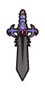
Abyssal Shadow Blade
Type: Dark Magic
Power: 58 Attack
Ability: Forged in darkness with jagged edges and a glowing red core that drains life force.
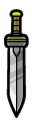
Standard Iron Dagger
Type: Shortsword
Power: 16 Attack
Ability: Compact and lightweight blade for fast, agile thrusts and basic defense.
Golden-Hilted Shortsword
Type: Elite Sword
Power: 22 Attack
Ability: Features a polished golden guard and pommel for improved durability and prestige.
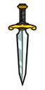
Mercenary's Stiletto
Type: Dagger / Pierce
Power: 25 Attack
Ability: Sleek tapered blade designed to pierce armor gaps with deadly precision.
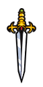
Demon-Crested Blade
Type: Dark Magic / Sword
Power: 54 Attack
Ability: An ornate demonic hilt with a crimson jewel that imbues strikes with dark energy.
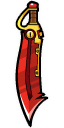
Crimson Eyeball Saber
Type: Monster / Curse
Power: 48 Attack
Ability: A living red curved blade featuring an ominous watching eye that terrifies opponents.
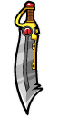
Silver Eyeball Saber
Type: Monster / Magic
Power: 50 Attack
Ability: Steel variant of the living blade with a glowing red pupil that cuts through defenses.
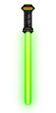
Neon Green Plasma Saber
Type: Sci-Fi / Energy
Power: 65 Attack
Ability: Emits a glowing high-frequency green energy beam that slices cleanly through almost any material.
Tidal Bubble Blade
Type: Water / Magic
Power: 52 Attack
Ability: Infused with pressurized deep-sea fluid and magical bubbles to deal hydrodynamic damage.
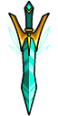
Azure Crystal Blade
Type: Magic / Crystal
Power: 55 Attack
Ability: Radiates shimmering crystalline energy with ethereal wings, dealing high magical pierce damage.
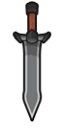
Wasteland Steel Sword
Type: Heavy Sword
Power: 30 Attack
Ability: A rugged, dark-iron blade forged for survival in harsh underground environments.
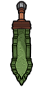
Ancient Stone Greatsword
Type: Earth / Heavy
Power: 35 Attack
Ability: Carved from ancient weathered stone, delivering heavy crushing blows to enemy armor.
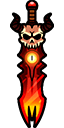
Infernal All-Seeing Blade
Type: Dark / Unique
Power: 62 Attack
Ability: Topped with a horned demon skull and a watchful glowing eye that exposes enemy weak points.
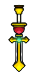
King's Red Gambit Sword
Type: Unique / Royal
Power: 58 Attack
Ability: A strategic royal weapon embedded with a red gem, commanding high tactical advantage and critical strikes.
King's Blue Gambit Sword
Type: Unique / Royal
Power: 60 Attack
Ability: Royal strategic blade featuring a dark orb and blue crystal hilt, boosting magical defense.
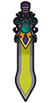
Eldritch Acid Blade
Type: Eldritch / Poison
Power: 56 Attack
Ability: Imbued with cosmic horror and dripping acidic green slime that melts enemy armor over time.
Practice Dummy Blade
Type: Training / Practice
Power: 10 Attack
Ability: A dull grayscale training sword used strictly for basic combat drills and testing attacks.
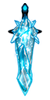
Frostheart Glacial Blade
Type: Ice / Magic
Power: 60 Attack
Ability: A jagged blade forged from eternal blue ice that freezes enemies solid upon impact.
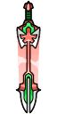
Crimson Glass Greatsword
Type: Glass / Magic
Power: 45 Attack
Ability: Translucent red-and-green tinted glass blade channeling fragile yet explosive kinetic energy.
Golden Shimmer Glass Blade
Type: Glass / Light
Power: 48 Attack
Ability: Shimmering yellow crystalline glass sword with ornate golden wings for high critical hits.
Rose Quartz Glass Blade
Type: Glass / Magic
Power: 46 Attack
Ability: Features a glowing emerald center embedded in a polished pink glass structure.
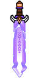
Enchanted Purple Glass Sword
Type: Glass / Arcane
Power: 50 Attack
Ability: Inscribed with mysterious glowing runic symbols along a translucent purple crystal edge.
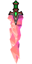
Rough Pink Crystal Shard
Type: Crystal / Earth
Power: 44 Attack
Ability: A jagged, unprocessed pink crystal blade that tears through enemy defenses with jagged cuts.
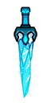
Glacial Claw Blade
Type: Ice / Frost
Power: 52 Attack
Ability: Shaped like razor-sharp frozen claws, chilling targets and slowing down their movement speed.
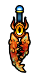
Abyssal Kraken Claw
Type: Monster / Water
Power: 57 Attack
Ability: A spiked crustacean pincer blade featuring a watchful yellow eye that summons tidal pressure.
Venomous Shimmer Dagger
Type: Poison / Arcane
Power: 53 Attack
Ability: A glowing green toxic blade wrapped in dark energy, inflicting lingering venom status on enemies.
Serpentine Viper Saber
Type: Poison / Sword
Power: 47 Attack
Ability: A curved sabre stained with toxic green venom, designed for lightning-fast sweeping poison strikes.
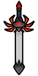
Black Widow Greatsword
Type: Venom / Dark
Power: 59 Attack
Ability: Features a menacing spider emblem on a black-and-red crossguard, injecting paralyzing spider toxin.
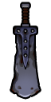
Wasteland Heavy Cleaver
Type: Survivor / Heavy
Power: 42 Attack
Ability: A rugged, rivet-studded iron blade weathered by harsh battles, delivering heavy blunt-edged cuts.
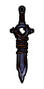
Bound Wasteland Shortsword
Type: Survivor / Dagger
Power: 36 Attack
Ability: A compact metal blade wrapped tightly in leather straps and twine, built for scrappy close combat.
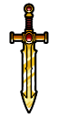
Gilded Treasure Broadsword
Type: Treasure / Elite
Power: 61 Attack
Ability: An ornate golden broadsword embedded with a ruby gem, increasing coin drops and critical hit chance.
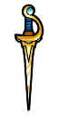
Gilded Royal Rapier
Type: Treasure / Pierce
Power: 58 Attack
Ability: A sleek golden thrusting rapier with a blue gemstone hilt for rapid armor-piercing stabs.
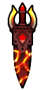
Infernal Volcanic Greatsword
Type: Fire / Heavy
Power: 64 Attack
Ability: A heavy obsidian blade cracked with glowing molten lava, scorching enemies with intense fire bursts.